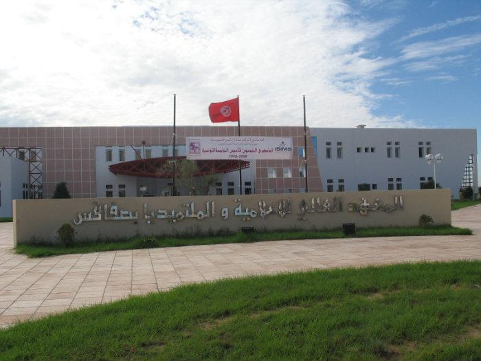

L’institut Supérieur et de multimédia

L'Institut supérieur d'informatique et de multimédia de Sfax (arabe : المعهد العالي للإعلامية والملتيميديا بصفاقس)ou ISIMS est un établissement de l'enseignement supérieur tunisien basé au sein du pôletechnologie de Sakiet Ezzit près de Sfax. Créé à la suite du décret présidentiel du 14 août 2001, il est
spécialisé dans les domaines de l'informatique et du multimédia.
L'ISIMS dispose de la personnalité civile et d'une autonomie financière et dépend de l'Université de
Sfax.
Il compte 1 595 étudiants durant l'année 2008-2009 dont 742 inscrits en première année ; la maîtrise en
informatique, systèmes et multimédia regroupe le plus d'étudiants avec 331 inscrits, toutes années
confondues. Le taux de réussite aux examens de l'année 2007-2008 a été de 85,96 %.
Sommaire
Personnel
Références
Lien externe
Formation
-
L'ISMIS met à la disposition de ses étudiants une formation de base pour aboutir aux spécialités
suivantes :
- Cycle préparatoire intégré
- Licences
- Licence Big Data et analyse de données
- Licence Informatique & Multimédia
- Mastères de recherche
- Sciences de l’informatique (SI)
- Entreprise system engineering
- Data science
- Science on cyber physical systems
- Science in digital technologies for health care
- Mastères professionnels
- Innovation et gestion de projets
- Design d’expérience et design d’interface (DEDI)
Personnel
- Faiez Gargouri est directeur de l'ISIMS depuis l'année universitaire 2007-2008, en remplacement
d'Abdelmajid Ben Hamadou, en poste à partir de 2001, sous les ordres duquel il a servi en tant que
directeur du département d'ingénierie informatique. En septembre 2011, Ben Hamadou reprend ses
fonctions de directeur, devenant alors le premier directeur élu de l'institut.
- Le secrétariat général est occupé depuis 2011 par Tarek Kammoun. Ce poste a auparavant été occupé
par Hamda Kamoun (2001-2006), Jamel Kolsi (2006-2008) et Hichem Elloumi (2008-2011)
Références
-
Principales statistiques de l'établissement (Institut supérieur d'informatique et de multimédia de Sfax)
Filières et programmes (Institut supérieur d'informatique et de multimédia de Sfax)
Lien externe
- Site officiel
- -Principales statistiques de l'établissement http://www.isimsf.rnu.tn//index.php
- -Filières et programmes http://www.isimsf.rnu.tn//index.php
- - Site officiel http://www.isimsf.rnu.tn/